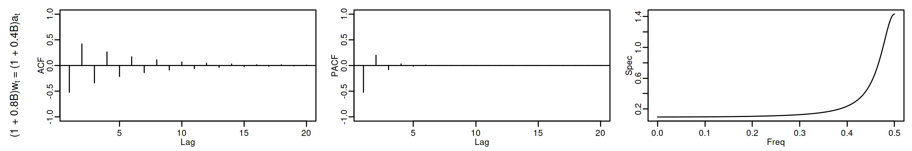
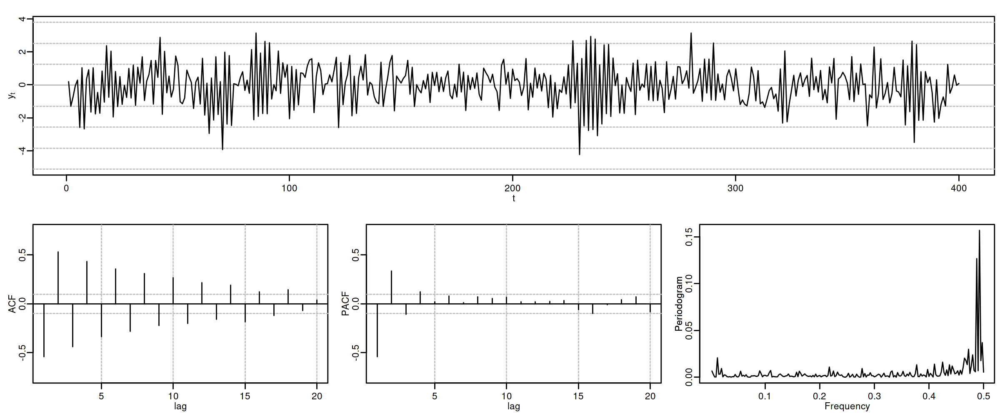
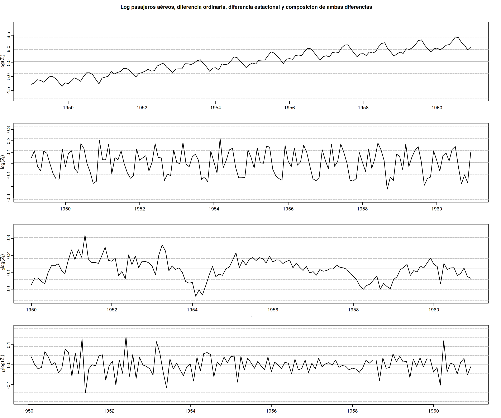

Econometría Aplicada. Lección 7
Table of Contents
En esta lección veremos la estructura de la ACF, la PACF y la densidad espectral de procesos ARMA. Después indicaremos algunas herramientas estadísticas que usaremos para tratar de identificar un modelo que se ajuste adecuadamente a los datos de una serie temporal: gráficos, contrastes de raíz unitaria, ACF y PACF muestrales, estadísticos descriptivos y contrastes de normalidad.
Carga de algunas librerías de R
# cargamos algunas librerías de R library(tfarima) # librería de José Luis Gallego para Time Series library(readr) # para leer ficheros CSV library(ggplot2) # para el scatterplot (alternaticamente library(tidyverse)) library(ggfortify) # para pintar series temporales library(jtools) # para representación resultados estimación library(zoo) # para generar objetos ts (time series) # y fijamos el tamaño de las figuras que se generan en el notebook options(repr.plot.width = 12, repr.plot.height = 4, repr.plot.res = 200)
1. ACF, PACF y densidad espectral de algunos modelos lineales (cont.)
1.1. Proceso autorregresivo ARMA(\(p,q\))
Sea \(\;\boldsymbol{X}\;\) el proceso estocástico estacionario solución de la ecuación en diferencias: \[\boldsymbol{\phi}*\boldsymbol{X}=\boldsymbol{\theta}*\boldsymbol{U}\] donde \(\;\boldsymbol{U}\sim WN(0,\sigma^2);\;\) el polinomio autorregresivo \(\;\boldsymbol{\phi}\;\) tiene grado \(p\) con \({\color{#008000}{\phi_{0}=1}}\) (y raíces fuera del círculo unidad), y el polinomio de media móvil \(\;\boldsymbol{\theta}\;\) es de grado \(q\) con \({\color{#008000}{\theta_{0}=1}};\;\) y donde \(\boldsymbol{\phi}\) y \(\boldsymbol{\theta}\) no tienen raíces comunes.
Si \(\;\;\boldsymbol{\phi}(z)=1-\phi_1z-\cdots-\phi_p z^p\;\;\) y \(\;\;\boldsymbol{\theta}(z)=1-\theta_1z-\cdots-\theta_q z^q,\;\;\) entonces
\begin{align*} (1-\phi_1\mathsf{B}-\cdots-\phi_p\mathsf{B}^p)X_t = & (1-\theta_1\mathsf{B}-\cdots-\theta_q\mathsf{B}^q)U_t; \end{align*}y por tanto \[X_t= U_t + \sum_{j=1}^p\phi_j X_{t-j} + \sum_{j=1}^q-\theta_j U_{t-j}.\]
Como las raíces de \(\boldsymbol{\phi}\) están fuera del círculo unidad, es decir, como el polinomio AR es ``invertible'' \(\;(\boldsymbol{\phi}^{-\triangleright}=\boldsymbol{\phi}^{-1}\in\ell^1)\;\) entonces \(\boldsymbol{X}\) tiene una representación como MA(\(\infty\)): \[\boldsymbol{\phi}*\boldsymbol{X}=\boldsymbol{\theta}*\boldsymbol{U} \quad\Rightarrow\quad \boldsymbol{X}=\frac{\boldsymbol{\theta}}{\boldsymbol{\phi}}*\boldsymbol{U} \quad\Rightarrow\quad X_t = U_t + \sum_{j=1}^\infty\psi_j U_{t-j};\] donde \(\;\boldsymbol{\psi}=\boldsymbol{\phi}^{-1}*\boldsymbol{\theta}=({\color{blue}1},\ \psi_1,\ \psi_2,\ \psi_3,\ldots)\;\) tiene grado \(\infty\).
Y como las raíces de \(\boldsymbol{\theta}\) están fuera del círculo unidad, es decir, como el polinomio MA es ``invertible'' \(\;(\boldsymbol{\theta}^{-\triangleright}=\boldsymbol{\theta}^{-1}\in\ell^1)\;\) entonces \(\boldsymbol{X}\) tiene una representación como AR(\(\infty\)): \[\boldsymbol{\phi}*\boldsymbol{X}=\boldsymbol{\theta}*\boldsymbol{U} \quad\Rightarrow\quad \frac{\boldsymbol{\phi}}{\boldsymbol{\theta}}*\boldsymbol{X}=\boldsymbol{U} \quad\Rightarrow\quad X_t = U_t + \sum_{j=1}^\infty-\varphi_j X_{t-j};\] donde \(\;\boldsymbol{\varphi}=\boldsymbol{\theta}^{-1}*\boldsymbol{\phi}=({\color{blue}1},\ \varphi_1,\ \varphi_2,\ \varphi_3,\ldots)\;\) tiene grado \(\infty\).
En un ARMA(\(p,q\)), por tener representación MA(\(\infty\)):
\(E(X_t)=0\) para todo \(t\in\mathbb{Z}\) y
\(\boldsymbol{\gamma} \;=\; \sigma^2 \frac{\boldsymbol{\theta}(z)}{\boldsymbol{\phi}(z)}*\frac{\boldsymbol{\theta}(z^{-1})}{\boldsymbol{\phi}(z^{-1})} = \sigma^2 \boldsymbol{\psi}(z)*\boldsymbol{\psi}(z^{-1})\;\) donde \(\;\boldsymbol{\phi}=\frac{\boldsymbol{\theta}}{\boldsymbol{\phi}}\);
es decir, \(\;\gamma_k = \sigma^2 \sum\nolimits_{j=0}^\infty \psi_{j+|k|}\psi_j;\quad k\in\mathbb{Z}\;\) (grado \(\infty\) y cogrado \(-\infty\)).
\(\boldsymbol{\rho} \;=\; \frac{1}{\gamma_0}\boldsymbol{\gamma}\)
\(f(\omega) = \frac{\sigma^2}{2\pi}\frac{\boldsymbol{\theta}(e^{-i\omega})\cdot\boldsymbol{\theta}(e^{i\omega})}{\boldsymbol{\phi}(e^{-i\omega})\cdot\boldsymbol{\phi}(e^{i\omega})} \;=\; \frac{1}{2\pi}\sum\limits_{h=0}^\infty \gamma_h \cos(h\omega);\quad\) donde \(\omega\in[-\pi,\pi]\).
(suma infinita de cosenos)
En un ARMA(\(p,q\)), por tener representación AR(\(\infty\)):
su PACF, \(\;\boldsymbol{\pi},\;\) también es una secuencia con grado \(\infty\) y cogrado \(-\infty\).
En la Lección 5 se demostró que para un proceso ARMA(\(p,q\)) \[\boldsymbol{\phi}(\mathsf{B})\gamma_k = \begin{cases} \sigma^2 \Big(\boldsymbol{\theta}(z)*\boldsymbol{\psi}(z^{-1})\Big)_k & \text{para } k\leq q \\ 0 & \text{para } k > q \quad \text{(como en un AR)} \end{cases}\]
Así, en cuanto a la ACF \(\boldsymbol{\rho}\):
- De \(\rho_1\) a \(\rho_q\) dependen de los \(q\) parámetros de \(\boldsymbol{\theta}\) y los \(p\) parámetros de \(\boldsymbol{\phi}\)
- Los \(p\) valores de \(\rho_q\) a \(\rho_{q-p+1}\) son los valores iniciales para resolver la ecuación en diferencias \(\boldsymbol{\phi}(\mathsf{B})\rho_k=0\;\) (con \(k\geq q)\)
- Si \(q < p\) toda la secuencia \(\rho_j\) para \(j \geq 0\) decae exponencialmente o sinusoidalmente según \(\boldsymbol{\phi}\) y los valores iniciales \(\rho_q\) a \(\rho_{q-p+1}\)
- Si \(q \geq p\) los primeros \(q-p+1\) valores iniciales \(\rho_0\) a \(\rho_{q-p}\) siguen una pauta diferente
En cuanto a la PACF \(\boldsymbol{\pi}\):
- Tiene grado \(\infty\) y cogrado \(-\infty\)
- A partir de cierto retardo se comporta como la PACF de un MA(\(q\)), es decir, decae exponencialmente o sinusoidalmente.
1.2. Proceso ARMA(\(1,1\))
Sea \(\;(1-\phi z)*\boldsymbol{X}=(1-\theta z)*\boldsymbol{U}\;\) con \(|\phi|<1\) y \(|\theta|<1\) y con \(\;\boldsymbol{U}\sim WN(0,\sigma^2):\)
\[X_t=\phi X_{t-1}-\theta U_{t-1} + U_t.\]
- \(\boldsymbol{\gamma} \;=\; \sigma^2 \frac{(1-\theta z)*(1-\theta z^{-1})}{(1-\phi z)*(1-\phi z^{-1})}\; \text{ por tanto... }\)
- \(\gamma_0 = \sigma^2\left(1+\frac{(\theta+\phi)^2}{1+\phi^2}\right);\quad \gamma_1 = \sigma^2\left(\phi+\theta+\frac{(\theta+\phi)^2\phi}{1+\phi^2}\right);\; \text{ y }\;\gamma_k =\phi\gamma_{k-1}\;\;\text{si } k>1\)
- \(\boldsymbol{\rho} \;=\; \frac{1}{\gamma_0}\boldsymbol{\gamma}\)
- \(f(\omega) \;=\; \;=\; \frac{\sigma^2}{2\pi}\frac{1+\theta^2-2\theta\cos(\omega)}{1+\phi^2-2\phi\cos(\omega)};\quad \omega\in[-\pi,\pi]\)
- \(\boldsymbol{\pi} \text{ decae geométricamente con } \theta^k\)
1.2.1. ARMA(1,1) \(\phi_1=0.7\) y \(\theta_1=-0.8\)
options(repr.plot.width = 12, repr.plot.height = 2, repr.plot.res = 200) arma11R <- um(ar = "(1 - 0.7B)", ma = "(1 + 0.8B)") display(list(arma11R), lag.max = 20, byrow = TRUE)
\[(1 - 0.7\mathsf{B}){X_t}=(1 + 0.8\mathsf{B}){U_t};\quad \phi>0;\;\theta<0\]
options(repr.plot.width = 12, repr.plot.height = 5, repr.plot.res = 200) ide(sim(arma11R, n = 400), lag.max = 20, graphs = c("plot", "acf", "pacf", "pgram"))
1.2.2. ARMA(1,1) \(\phi_1=-0.7\) y \(\theta_1=0.8\)
options(repr.plot.width = 12, repr.plot.height = 2, repr.plot.res = 200) arma11A <- um(ar = "(1 + 0.7B)", ma = "(1 - 0.8B)") display(list(arma11A), lag.max = 20, byrow = TRUE)
\[(1 + 0.7\mathsf{B}){X_t}=(1 - 0.8\mathsf{B}){U_t};\quad \phi<0;\;\theta>0\]
options(repr.plot.width = 12, repr.plot.height = 5, repr.plot.res = 200) ide(sim(arma11A, n = 400), lag.max = 20, graphs = c("plot", "acf", "pacf", "pgram"))
1.2.3. ARMA(1,1) \(\phi_1=0.4\) y \(\theta_1=0.8\)
options(repr.plot.width = 12, repr.plot.height = 2, repr.plot.res = 200) arma11NVA <- um(ar = "(1 - 0.4B)", ma = "(1 - 0.8B)") display(list(arma11NVA), lag.max = 20, byrow = TRUE)
\[(1 - 0.4\mathsf{B}){X_t}=(1 - 0.8\mathsf{B}){U_t};\quad \phi>0;\;\theta>0\]
options(repr.plot.width = 12, repr.plot.height = 5, repr.plot.res = 200) ide(sim(arma11NVA, n = 400), lag.max = 20, graphs = c("plot", "acf", "pacf", "pgram"))

1.2.4. ARMA(1,1) \(\phi_1=-0.8\) y \(\theta_1=-0.4\)
options(repr.plot.width = 12, repr.plot.height = 2, repr.plot.res = 200) arma11RNV <- um(ar = "(1 + 0.8B)", ma = "(1 + 0.4B)") display(list(arma11RNV), lag.max = 20, byrow = TRUE)
\[(1 + 0.8\mathsf{B}){X_t}=(1 + 0.4\mathsf{B}){U_t};\quad \phi<0;\;\theta<0\]

options(repr.plot.width = 12, repr.plot.height = 5, repr.plot.res = 200) ide(sim(arma11RNV, n = 400), lag.max = 20, graphs = c("plot", "acf", "pacf", "pgram"))

2. La especificación del modelo se escoge según las características de los datos.
¿Es la serie
- "estacionaria en media"?
- (y si lo es, ¿cuál es su media?)
- (y si no lo es, ¿cómo cambia o evoluciona su media?)
- "estacionaria en varianza"? (homocedástica)
- (y si lo es, ¿cuál es su varianza?)
- (y si es heterocedástica, ¿cómo cambia o evoluciona su varianza?)
¿Están sus valores correlados con su historia pasada (autocorrelados)?
¿Qué correlación tienen los datos con los datos \(k\) periodos atrás una vez descontado el efecto de los datos intermedios?
Veamos algunas herramientas estadísticas para poder desvelar estas características.
3. Herramientas para desvelar propiedades de una serie temporal
3.1. Análisis gráfico
3.1.1. Gráfico de la serie temporal
Representa sus valores en el eje vertical (\(y\)) frente a una escala temporal en el horizontal (\(x\)). Es útil para detectar visualmente:
- tendencias y/o estacionalidad
- cambios de variabilidad
- valores atípicos (outliers)
- el 95% aprox. de una muestra de valores generados por una distribución normal debería estar comprendido entre \(\mu\pm2\sigma\)
la probabilidad de que una variable normal genere un valor fuera de las bandas de \(\mu\pm3\sigma\) es \(0.0023\)
{kind=link}
Es importante escalar y rotular adecuadamente los ejes y asegurar la comparabilidad entre series y gráficos distintos (si los hubiere).
3.1.2. Gráfico rango-media
Cambios de variabilidad de una serie pueden evidenciarse en su gráfico temporal.
Pero también suelen verse bien en un gráfico rango-media, donde se representa:
- en eje \(x\): nivel de la serie (normalmente la media de submuestras no solapadas).
- en eje \(y\): dispersión de la serie (normalmente el rango de dichas submuestras).
Si los puntos se sitúan alrededor de una recta de pendiente positiva, tomar logaritmos.
Veamos el gráfico de la serie de pasajeros de líneas aéreas junto a su gráfico de rango media:
Z <- AirPassengers ide(Z, graphs = c("plot", "rm"), main="Pasajeros de líneas (aéreas en miles) y gráfico rango-media")
El gráfico de rango media a veces se acompaña de una regresión de la dispersión sobre los niveles para medir la relación nivel-dispersión.
3.2. Determinación del orden de integración
El orden de integración es el número mínimo de diferencias necesarias para lograr la estacionariedad en media.
Decidir adecuadamente el orden de integración es crucial en el análisis de series temporales.
Las herramientas utilizadas para tomar la decisión son
- el análisis gráfico
- los contrastes formales
3.2.1. Análisis gráfico
options(repr.plot.width = 12, repr.plot.height = 8, repr.plot.res = 200) PoblacionAustralia_ts = as.ts( read.zoo('datos/PoblacionAustralia.csv', header=TRUE, index.column = 1, sep=",", FUN = as.yearmon)) ide(PoblacionAustralia_ts, graphs = c("plot"), transf = list(list(bc = F), list(bc = F, d = 1), list(bc = F, d = 2)), main="Población australiana, primera diferencia y segunda diferencia" )
La serie de población \(\boldsymbol{y}\) tiene una clara tendencia creciente (primer gráfico), que desaparece al tomar una diferencia ordinaria, \[\nabla\boldsymbol{y}=(1-\mathsf{B})*\boldsymbol{y}\] (segundo gráfico). Bastar con tomar una primera diferencia de la serie de población para obtener una nueva serie que se asemeja a la realización de un proceso estacionario.
No obstante, ¿qué pasa si tomamos una segunda diferencia ordinaria? \[\nabla\nabla\boldsymbol{y}=\nabla^2\boldsymbol{y}=(1-\mathsf{B})^2*\boldsymbol{y}\] (segundo gráfico). Pues que la serie obtenida también es estacionaria, pero ojo, es un grave error tomar más diferencias de las necesarias al modelizar los datos. Se debe tomar el mínimo número de transformaciones que arrojen una serie ``estacionaria'' (recuerde que decir que una serie temporal es estacionaria es un abuso del lenguaje).
Si se toman más diferencias de las necesarias se obtiene un proceso no invertible (raíces unitarias en la parte MA que imposibilitan que el proceso tenga una representación como AR(\(\infty\)) causal), lo cual conduce a problemas de identificación y estimación.
options(repr.plot.width = 12, repr.plot.height = 10, repr.plot.res = 200) ide(Z, graphs = c("plot"), transf = list(list(bc=T), list(bc=T, d=1), list(bc=T, D=1), list(bc=T, D=1, d=1)), main = "Log pasajeros aéreos, diferencia ordinaria, diferencia estacional y composición de ambas diferencias" )

Como ya vimos, la serie pasajeros en logaritmos tiene tendencia y estacionalidad muy evidentes. No basta con tomar solo una diferencia ordinaria \[\nabla\boldsymbol{y}=(1-\mathsf{B})*\boldsymbol{y};\] pues el resultado muestra una pauta estacional. Ni tampoco basta con tomar solo una diferencia estacional \[\nabla_{12}(\boldsymbol{y})=(1-\mathsf{B^{12}})*\boldsymbol{y};\] pues resulta una serie que ``deambula'', i.e., que no es ``estacionaria'' en media.
Tomar una diferencia ordinaria y otra estacional \[\nabla\nabla_{12}(\boldsymbol{y})=(1-\mathsf{B})*(1-\mathsf{B^{12}})*\boldsymbol{y}\] arroja una serie que sí parece ser ``estacionaria''.
options(repr.plot.width = 12, repr.plot.height = 8, repr.plot.res = 200) TemperaturaRetiro_ts=ts(read.csv("datos/Retiro.txt"),start=c(1985, 1), end=c(2015,9), frequency=12) ide(TemperaturaRetiro_ts, graphs = c("plot"), transf = list(list(), list(D = 1)), main="Temperatura media en el Retiro y diferencia estacional" )
En el caso de la serie de temperaturas en el Parque del Retiro, parece que es suficiente con tomar solo una diferencia estacional.
3.2.2. Contrastes formales sobre el orden de integración: DF, ADF y KPSS
- Test de Dickey-Fuller (DF)
- \(H_0\)
- la serie es \(I(1)\)
- \(H_1\)
- la serie es \(I(0)\).
Sea el siguiente modelo donde \(\phi\) es un parámetro autorregresivo y \(U_{t}\) es ruido blanco \[Y_{t}=\phi Y_{t-1}+U_{t},\]
Habrá una raíz unitaria (será no-estacionario) si \(\phi =1.\;\) Restando \(Y_{t-1}\) a ambos lados
\[\nabla Y_{t}\;=\;(\phi -1)Y_{t-1}+U_{t}\;=\;\delta Y_{t-1}+U_{t}\]
donde \(\delta=\phi -1\) y, por tanto, la \(H_0\) se reduce a \(\delta=0\).
Pasos del contraste:
- se estima el último modelo por MCO
- se calcula el ratio \(t\) de significación de \(\delta\)
- se compara dicho ratio con la distribución específica del contraste \(DF\) (pues bajo la nula, el ratio \(t\) no se distribuye de la forma habitual).
- Test de Dickey-Fuller aumentado (ADF)
Una variante habitual del test DF es el test de Dickey-Fuller aumentado (ADF), que consiste en estimar por MCO el modelo: \[\nabla Y_t = c + \delta Y_{t-1} + \pi_1 \nabla Y_{t-1} + \pi_2 \nabla Y_{t-2} + \cdots + \pi_p \nabla Y_{t-p} + U_t\] que añade \(p\) retardos del regresando como regresores para permitir autocorrelación. Por lo demás, el test se calcula de la forma habitual (comparando de ratio \(t\) de \(\widehat{\delta}\) con las tablas del test ADF).
Otra variante consiste en incluir una tendencia temporal determinista: \[\nabla Y_t = \underbrace{c + \beta t} + \delta Y_{t-1} + \pi_1 \nabla Y_{t-1} + \pi_2 \nabla Y_{t-2} + \cdots + \pi_p \nabla Y_{t-p} + U_t\]
- Test Kwiatkowski–Phillips–Schmidt–Shin (KPSS)
El contraste KPSS es un contraste alternativo (y complementario) al test DF/ADF
Las hipótesis del test KPSS están invertidas respecto a las del Test DF
- \(H_0\)
- la serie es \(I(0)\).
- \(H_1\)
- la serie es \(I(1)\) o estacionaria en torno a una tendencia determinista
DF/ADF y KPSS se complementan. Si la series es:
- estacionaria: el test DF/ADF debería rechazar su \(H_0:\) la serie es \(I(1)\)
- NO estacionaria: el test KPSS debería rechazar su \(H_0:\) la serie es \(I(0)\)
Estos test son poco potentes y son frágiles ante incumplimientos (heterocedasticidad o no-normalidad); por ello debemos complementarlos con el análisis gráfico.
3.3. ACF muestral
La k-ésima autocorrelación muestral simple (\(\widehat{\rho_k}\)) se define como: \[\widehat{\rho_k}=\frac{\widehat{\rho_k}}{\widehat{\rho_0}};\qquad \widehat{\rho_k}=\frac{1}{n}\sum_{t=k+1}^n \widetilde{X_t}\widetilde{X_{t-k}},\quad\text{para }\;k=1,2,\ldots\] donde \(\widetilde{X_t}=X_t-\bar{X}\).
Para valorar la significatividad individual de estas autocorrelaciones puede usarse el error estándar asintótico: \(s.e(\widehat{\rho_k})=1/\sqrt{n}\).
Para contrastar la \(H_0:\) conjuntamente los \(k\) primeros retardos son no significativos (es decir, para contrastar si el proceso es ruido blanco) se emplea el test de Ljung-Box \[Q = n\left(n+2\right)\sum_{k=1}^h\frac{\hat{\rho}^2_k}{n-k}\] (usaremos el test de Ljung-Box para evaluar los modelos).
3.4. PACF muestral
La k-ésima autocorrelación muestral \(\widehat{\pi_k}\) se puede estimar mediante el algoritmo Levinson-Durbin sustituyendo las autocorrelaciones teóricas por las muestrales.
O bien, calculando el k-ésimo coeficiente MCO de una autorregresión de orden \(k\) \[\widetilde{X}_t = \widehat{\phi_{k1}}\widetilde{X}_{t-1} + \widehat{\phi_{k2}}\widetilde{X}_{t-2} + \cdots + \widehat{\phi_{kk}}\widetilde{X}_{t-k} + U_t;\qquad k = 1, 2,\ldots\] donde \(\widetilde{X}_t=X_t-\bar{X}\;\) y donde \(\;\widehat{\pi_k}=\widehat{\phi_{kk}}\)
3.5. Otras herramientas estadísticas CómoHacerConR
3.5.1. Estadísticos descriptivos
- el nivel de la serie (media, mediana),
- valores extremos (máximo y mínimo). A veces son outliers o errores de registro
- dispersión de la variable (desviación típica, coeficiente de variación, rango, rango interpercentiles, rango intercuartílico)
- otros momentos (asimetría, exceso de curtosis)
También es frecuente contrastar si la media es significativa ( \(H_0: \mu = 0\)) \[\frac{\widehat{\mu}}{\widehat{dt(\widehat{\mu})}}\underset{H_0}{\sim}t_{n-1};\qquad \widehat{dt(\widehat{\mu})}=\frac{\widehat{\sigma}}{\sqrt{n}}.\]
library(pastecs) # resumen estadísticos descriptivos # https://cran.r-project.org/web/packages/pastecs/index.html (stat.desc) library(knitr) # presentación de tabla resumen # https://cran.r-project.org/web/packages/knitr/index.html (kable) # https://bookdown.org/yihui/rmarkdown-cookbook/kable.html # estadísticos principales y test de normalidad kable(stat.desc(Z, basic=FALSE, norm=TRUE), 'rst')
============ ============= \ x ============ ============= median 265.5000000 mean 280.2986111 SE.mean 9.9971931 CI.mean.0.95 19.7613736 var 14391.9172009 std.dev 119.9663169 coef.var 0.4279947 skewness 0.5710676 skew.2SE 1.4132515 kurtosis -0.4298441 kurt.2SE -0.5353818 normtest.W 0.9519577 normtest.p 0.0000683 ============ =============
3.5.2. Contraste de normalidad Jarque-Bera
- Si los datos son mayores que cero
- a menudo la transformación logarítmica ayuda a conseguir normalidad
- Si hay valores atípicos
- el mejor tratamiento es intervenirlos.
Podemos calcularlo con la librería momments:
#install.packages("moments") library(moments) # Perform the Jarque-Bera test jb_test <- jarque.test(as.numeric(Z)) # Print the test result print(jb_test)
Jarque-Bera Normality Test data: as.numeric(Z) JB = 8.9225, p-value = 0.01155 alternative hypothesis: greater
Jarque-Bera Normality Test data: as.numeric(Z) JB = 8.9225, p-value = 0.01155 alternative hypothesis: greater
Otra librería alternativa para calcularlo: tseries
library(tseries) # Perform the Jarque-Bera test jb_test <- jarque.bera.test(Z) # Print the test result print(jb_test)
Registered S3 method overwritten by 'quantmod': method from as.zoo.data.frame zoo Jarque Bera Test data: Z X-squared = 8.9225, df = 2, p-value = 0.01155